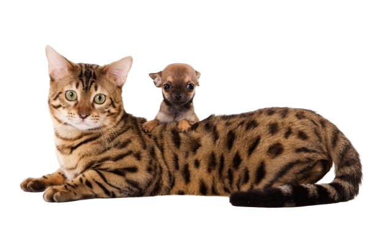
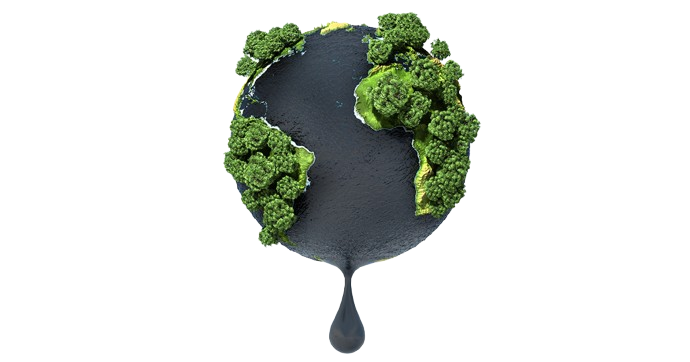
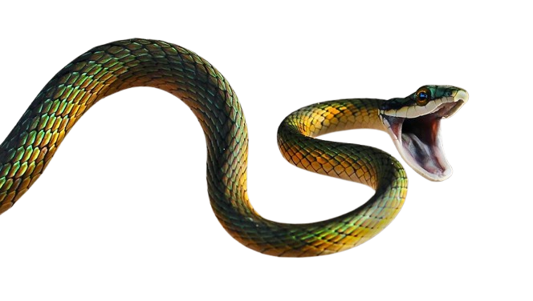

Une ballade dans les calanques est l’occasion de se rendre compte de la merveille que la nature a créée
sur le littoral méditerranéen.
Partout dans le monde, les différentes espèces animales s’installent,
survivent et se développent dans des lieux qui leurs conviennent. La répartition de la faune sur le globe
dépend ainsi de facteurs climatiques, mais aussi de la végétation et de la configuration des sols
considérés. Les terres et la biodiversité qu’elles abritent constituent des écosystèmes, à la fois uniques
et multiples. Au cours des âges, dans les calanques comme ailleurs, ces équilibres naturels ont dû
s’adapter à l’intrusion des hommes et des activités humaines. La faune et la flore en ont pâti. Certaines
espèces ont péri, d’autres se sont adaptées pour leur survie, et d’autre encore, ont supporté ces
changements sans mutation.

Du milieu marin côtier au grand large et grand fond, le Parc National des calanques réunit plus de 60 espèces marines patrimoniales. Espèces de poissons, cétacés, plantes marines, organismes marins variés composent ce patrimoine d’exception.
 
Du milieu marin côtier au grand large et grand fond, le Parc National des calanques réunit plus de 60 espèces marines patrimoniales. Espèces de poissons, cétacés, plantes marines, organismes marins variés composent ce patrimoine d’exception.
De nombreux insectes, reptiles et oiseaux composent la faune du parc national des calanques. Comme pour la flore cette variété d’espèce a su s’adapter au climat chaud et sec de la côte méditerranéenne. Voici quelques exemples des espèces les plus présentes.

Du milieu marin côtier au grand large et grand fond, le Parc National des calanques réunit plus de 60 espèces marines patrimoniales. Espèces de poissons, cétacés, plantes marines, organismes marins variés composent ce patrimoine d’exception.